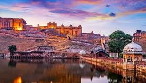
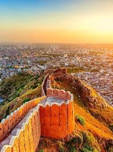
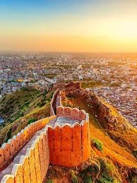
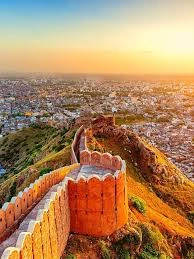

🰠Jaipur, Rajasthan – The Pink City
Jaipur, the capital of Rajasthan, is famous for its royal palaces, vibrant bazaars, and rich history. Known as the Pink City, its grand forts and lively streets showcase India's glorious past and architectural brilliance.
📅 Best Time to Visit: October–March
📠Must-Visit Places:
- Hawa Mahal: The ‘Palace of Winds’ with 953 windows for natural ventilation.
- City Palace: A luxurious palace with museums showcasing royal heritage.
- Jantar Mantar: An astronomical marvel and UNESCO site.
- Jaipur Markets: Johari Bazaar (jewelry), Bapu Bazaar (mojris & textiles).
🽠Must-Try Food:
- Dal Baati Churma
- Ghewar
- Pyaaz Kachori
- Laal Maas (spicy meat curry)
🚀 Travel Tips:
- Shop for authentic Rajasthani handicrafts.
- Hire a local guide for an in-depth historical experience.
- Visit early in the morning to avoid crowds.

 

